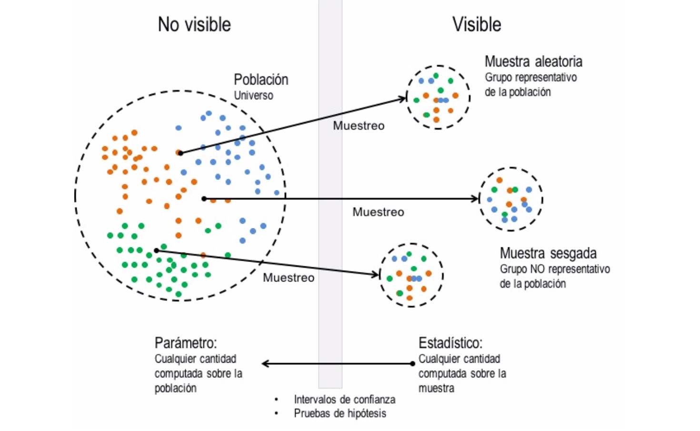

Introducción al Análisis Exploratorio Cuantitativo de Datos
10:55 min | Última modificación: Diciembre 13, 2021
Introducción
Qué es?
Es una aproximación metodológica y filosófica para organizar, graficar y resumir los datos, de tal forma que se puedan resolver preguntas de interés.
El análisis exploratorio de datos busca:
Mejorar la comprensión y aumentar el conocimiento.
Generar y confirmar una o más hipótesis.
Construir una intuición y ganar insights sobre los datos.
Formular conclusiones válidas.
Ayudar en análisis de decisiones y planeamiento.
Ayudar en análisis causal.
Proceso metodológico.
Fase Previa: ingestión y limpieza de datos.
Análisis de la distribución.
Correlación.
Ranking.
Evolución
Clustering.
Selección de Características.
Ingeniería de Características.
Fase Posterior: Sintetización, modelado, comunicación y decisión.
Definiciones y conceptos básicos
Como fase inicial de la analítica y de cualquier proceso de modelado, es necesario conocer y familiarizarse con las características de los datos disponibles, con el objetivo de determinar si la información se ajusta al problema planteado inicialmente y generar hipotesis del comportamiento. Existen diversas técnicas para explorar los datos, agrupadas en medidas numéricas como las medidas de localización o medidas de dispersión, y gráficas explicativas. En este tutorial se describen las preguntas más frecuentes a las que se enfrenta un modelador en cuanto a los datos y las posibles técnicas que ayudan a esclarecerlas.
Análisis exploratorio cuantitativo de datos. En el análisis exploratorio de datos se busca obtener información de interés de la población a partir de una muestra que es representativa de la población. En términos más formales, se usa para generar hipótesis sobre los datos, tales como:
Ubicación del centro de los datos.
Dispersión de los datos.
Distribución de probabilidades de los datos.
Relaciones entre los datos.
Uno de los objetivos fundamentales en estadística es estimar el valor de un parámetro de la población mediante un estadístico calculado sobre la muestra.
Existen dos aproximaciones para estimar características de la población:
Estimación de intervalos de confianza: usualmente para estadísticos calculados sobre la muestra de datos.
Pruebas de hipótesis: para propiedades más complejas de la población, como por ejemplo su distribución de probabilidades o relaciones de dependencia entre variables.
Población: Colección de objetos o individuos sobre los cuales se desea obtener información de interés.
Parámetro: Un número que resume una propiedad o característica de la población entera.
Muestra: Grupo obtenido aleatoriamente que es representativo de la población.
Estadístico: Un número que resume una propiedad o característica de la muestra.
Tipos de datos: Los tipos de datos son los siguientes:
Continuos (flotante, numérico)
Discretos (enteros)
Categóricos (enumeraciones, fctores, valores nominales).
Binarios (Indicadores, lógicos)
Ordinales (Categóricos con un ordenamiento explícito, factores ordenados).
Datos rectagulares: Datos organizados en una tabla.
Feature: característica, atributo, entrada, predictor, variable independiente.
Outcome: resultado, variable dependiente, respuesta, objetivo, salida.
Registro: fila en una tabla de datos, también conocida como caso, ejemplo, instancia, observación, patrón o muestra.